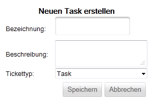
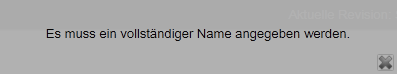
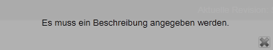
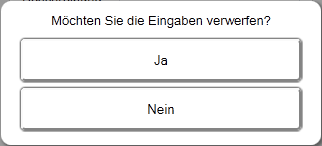

Task anlegen
Ein Task kann nur angelegt werden, wenn zuvor ein Sprint ausgewählt wurde.

Um einen neuen Task zu definieren müssen neben der Angabe des Sprints noch eine Bezeichnung, eine Beschreibung und ein Tickettyp angegeben werden.
Bei der Bezeichnung und der Beschreibung des Tasks handelt es sich um Pflichtangaben. Sie dürfen weder leer sein noch nur aus Leerzeichen bestehen. Sollte dies dennoch der Fall sein, so zeigt die Anwendung eine entsprechende Fehlermeldung an.
Wenn keine Bezeichnung angegeben wurde:

Wenn keine Beschreibung angegeben wurde:

Nachdem eine Fehlermeldung angezeigt wurde, haben Sie die Möglichkeit die Eingaben vollständig zu verwerfen oder mit der Eingabe fortzufahren.

Wenn Sie diesen Dialog mit "Ja" beantworten, so gelangen Sie direkt zur Taskboardübersicht ohne dass eine Änderung vorgenommen wurde. Andernfalls können Sie mit der Korrektur Ihrer Eingaben fortfahren.
Über die Auswahl des Tickettyps definieren Sie, welche konkrete Ausprägung der Task haben soll. Standardmäßig gibt es einen Task-Tickettyp der bereits in der Anwednung definiert ist ("Task"). Werden weitere Task-Tickettypen benötigt, so müssen diese zunächst definiert werden (siehe hier).
Speichern/verwerfen
Um den Task zu speichern, klicken Sie auf  oder um die Eingaben zu verwerfen auf
oder um die Eingaben zu verwerfen auf  .
.
Created with the Personal Edition of HelpNDoc: Easily create Help documents